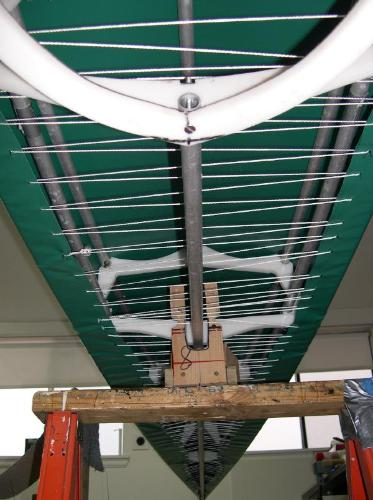

| Covering The Hull (3 of 6) | Menu Previous Page Next Page |
|  |
One-Piece Hull
5. View from underneath after the lacing has been tightened and tied off approximately 12 inches from the stems. Note that the lacing goes under the coaming and deckridge. This is done because the lacing will remain in place until after the deck is skinned. In this way, the lacing will not interfere with the deck skinning process.
The skin has been tightened to a snug fit. This will insure that the skin will stay in place when turned over for skinning of the deck. Of more importance is to not over tighten the skin. If too tight, it may recoil a little after the deckridge is cut open and the lacing removed. If so, it may be difficult to close the skin when in use.
|